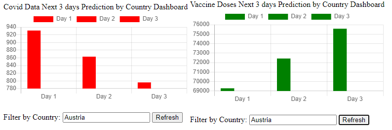

Regression Model¶
The data visualization is extended through another layer of linear regression model live execution and projects next three days of expected Covid cases and Vaccine data.
def linear_reg_predict(data):
"""
Perform linear regression model execution and return the predicted values
:param data: data sequence (covid or vaccine data for given country)
:return:
The generated predicted values for the next few days
"""
lin_reg = LinearRegression()
lin_reg.fit(X, y)
predicted_y = lin_reg.predict(to_predict_x)
m = lin_reg.coef_
c = lin_reg.intercept_
print("Predicted y:\n", predicted_y)
print("slope (m): ", m)
print("y-intercept (c): ", c)
day1 = [round(num) for num in predicted_y[0]][0]
day2 = [round(num) for num in predicted_y[1]][0]
day3 = [round(num) for num in predicted_y[2]][0]
rounded_predict = [day1, day2, day3]
return rounded_predict
The data is visualized using Django app and chart JS
